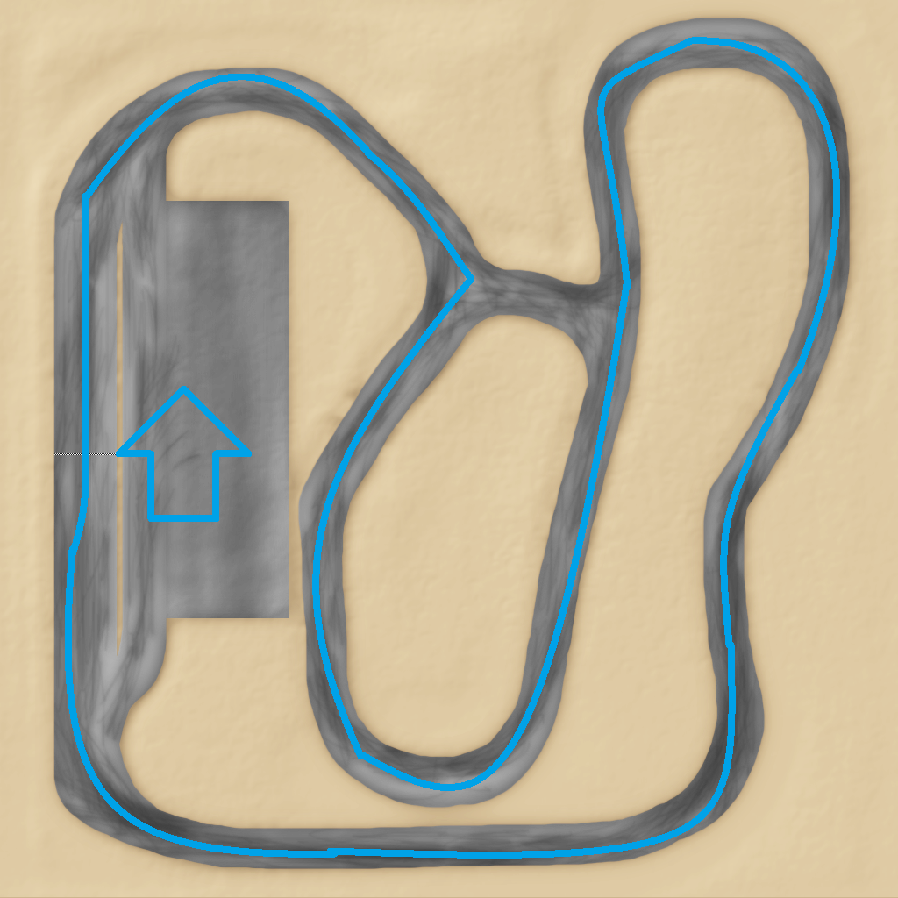

West View Tuners
Do you own a lame car? Would you like to do some "minor" modifications on it and earn some cash by racing it? This Event is just for you!
This Weekend:
We will be using the Streetcross Track for this weekend.
The allowed mods are listed below this article. Spectators are very welcome for our Event!
We will be using the outer circuit for this
weekend. Please remember to drive on the right circuit (see image). The amount of laps for one race will be 15 and 5.
During the 10-laps
race: Repairing is allowed. Drivers have to drive into the pits and stop anywhere. They are allowed to backspace after coming to an complete
stop. They are allowed to continue the race after the pit stop.
During the 5-laps race: Drivers are not allowed to use the pits. Please
refere to §3 of the Event rules.

General:
- You can use one of the allowed mods and modify it as you wish (do not edit the N/B)
- Drivers will have to finish an set amount of laps during each race
- Ramming is allowed
Rules:
- §1.1
Players are not allowed to interfere with the Event. The gameplay has to "flow".
- §1.2
Spawning is not allowed during active races.
- §1.3
Players are not allowed to use the chat during active races.
- §1.4
Players who interfere with an race will be kicked and the race might be restarted. The player will be banned if necessary.
- §2
Only excessive aggresion during races can disqualify drivers. Light ramming is allowed.
- §3
Respawning and node grabbing is forbidden.
- §4
Players can only drive one of the allowed vehicles. It is possible to use different cars for seperate races.
- §5
Drivers are allowed to edit the engine, turbo, brakes, wheels, shocks, weight and drive train of their vehicle as they wish.
- §6
Moderators have to count the laps done by each player and note the correct order in which the drivers crossed the finish line, during their
last lap. Drivers have to drive the set amount of laps.
- §7
Moderators can stop the race at any time.
- §8
Moderators are allowed to introduce new rules, even if the Event is going on.
- §9
Moderators are allowed to kick or ban players if needed.
- §10
Players have to download all allowed mods, so they can see other drivers.
- §11
Collisions have to be enabled during every race.
Leaderboard:
There is no data yet!